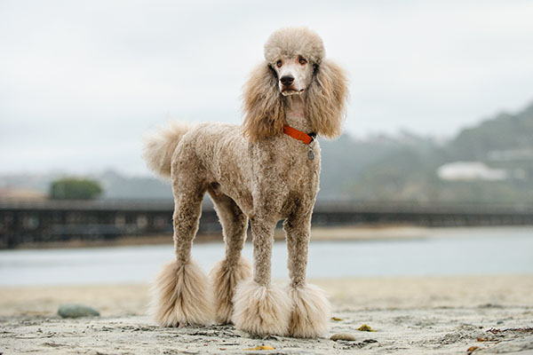

Dog Breed
Images |
Breed |
Descriptions |
|---|---|---|
 |
Golden Retriever |
The Golden Retriever is one of the most popular dog breeds in the United States. The breed’s friendly, tolerant attitude makes them great family pets, and their intelligence makes them highly capable working dogs. |
|  | Poodle |
Elegant. Proud. Clever. The Poodle is an impressive dog, as the many best-in-show winners from this dog breed can attest. But behind the blue ribbons, impressive hairdos, and regal attitude, you’ll find an affectionate family dog with an ancient history and many talents. |
Cocker Spaniel |
The Cocker Spaniel is primarily a beloved companion dog breed, though they remain a capable bird dog at heart. Beautiful to look at–and labor-intensive to groom–the Cocker’s amenable, cheerful disposition also makes them a treat to have in the family. |
|
 |
Shih Tzu |
The name “Shih Tzu” means little lion, but there’s nothing fierce about this dog breed. This pooch is a lover, not a hunter. |
 |
Bulldog |
The Bulldog was originally used to drive cattle to market and to compete in a bloody sport called bullbaiting. Today, they’re gentle companions who love kids. |